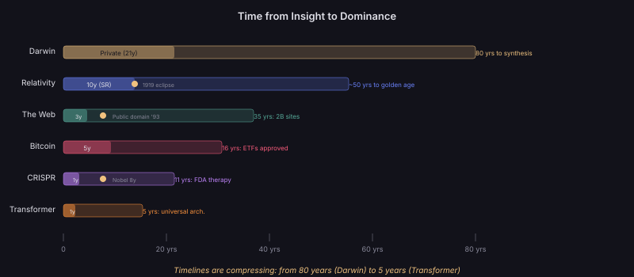

The Accelerating Timeline of Idea Dominance
Darwin waited 21 years to publish and 80 years for full synthesis. The Transformer architecture went from paper to universal dominance in 5 years. Timelines are compressing — driven by digital networks, open publication, and instant global access.
Each case study is examined through our five analytical lenses — network position, power law dynamics, memetic fitness, compression power, and evolutionary selection — to reveal the specific mechanisms that drove each idea to dominance.
1. Natural Selection (1859)
The Idea
All life evolves through variation, inheritance, and differential survival. No designer needed — blind selection acting on random variation produces the appearance of design. A single mechanism explaining the diversity of all life.
Why It Dominated
Network: Darwin was supremely well-connected — wealthy, Cambridge-educated, corresponding with naturalists worldwide. He sent over 80 complimentary copies to influential figures before publication. Huxley, Hooker, and Lyell formed a powerful amplification network. They co-founded the X Club (1864), which produced three consecutive Royal Society Presidents and backed the founding of Nature journal.
Compression: One mechanism (variation + selection + inheritance) explained all biological diversity — a compression ratio exceeding 10⁶:1.
Timing: Victorian Britain was primed by Malthus, Lyell's uniformitarianism, and industrialisation's metaphors of competition.
Memetic fitness: "Survival of the fittest" (Spencer's repackaging) was supremely spreadable — even if misleading. The idea was compressible into a three-word slogan.
2. General Relativity (1915)
The Idea
Space and time are not a fixed stage — they are dynamic, curved by matter and energy. Gravity is not a force but the geometry of spacetime itself. Mass tells space how to curve; curved space tells mass how to move.
Why It Dominated
Network: The 1919 eclipse result was amplified by British media during post-WWI hunger for international cooperation. A British expedition confirming a German-born physicist's theory was a powerful narrative.
Compression: The entire theory can be written as one tensor equation: Gμν = 8πTμν. Extraordinary compression.
Timing: Post-war public appetite for revolutionary ideas. Also: no competing theory existed — general relativity was the only game in town for curved spacetime.
Selection: Empirical selection was decisive — Mercury's orbit, light bending, gravitational redshift. Each prediction confirmed eliminated alternatives.
3. The World Wide Web (1989)
The Idea
A decentralised hypertext system running on the internet — where any document can link to any other document, and anyone can publish without permission. Information universally accessible through a simple protocol (HTTP) and addressing system (URLs).
Why It Dominated
Network: CERN's physicists were early internet users with strong cross-institutional ties. The newsgroup announcement reached exactly the right early adopters — technical people who could build on it.
Power law: Each new website made the Web more valuable for all others (network effects). The first-mover advantage was absolute — competing hypertext systems (Gopher, WAIS) couldn't overcome the exponential gap.
Selection: The public domain release was the critical evolutionary move. Proprietary alternatives couldn't compete with free infrastructure.
Compression: The core idea is expressible in one sentence: "linked documents accessible via simple addresses." Maximum compressibility enabled universal understanding.
4. Bitcoin / Blockchain (2008)
The Idea
A decentralised digital cash system requiring no trusted third party. A distributed ledger (blockchain) maintained by proof-of-work consensus, enabling value transfer without institutions. Digital scarcity created through cryptography.
Why It Dominated
Network: The cypherpunk mailing list was the perfect first network — technically capable, ideologically motivated, and well-connected to broader tech communities. Early adopters were also builders.
Timing: Published weeks after the 2008 financial crisis. Trust in financial institutions was at a historic low. The idea of trustless finance had maximum resonance.
Memetic fitness: "Digital gold" and "decentralised money" are supremely memetic — evoking both technological novelty and ancient human understanding of value.
Niche construction: Bitcoin created its own economy, its own media, its own conferences, its own academic subfield — all of which select for blockchain-compatible ideas.
5. CRISPR Gene Editing (2012)
The Idea
A bacterial immune system (CRISPR-Cas9) can be repurposed as a precise gene-editing tool — cutting DNA at any specified location, enabling targeted modification of any genome. Programmable scissors for DNA.
Why It Dominated
Compression: "Programmable DNA scissors" — the concept compresses into four words that anyone can understand. Extreme accessibility.
Utility: Unlike many theoretical breakthroughs, CRISPR was immediately practical. Any molecular biology lab could use it within weeks of reading the paper.
Timing: Genomics had created massive demand for gene-editing tools. Previous methods (ZFNs, TALENs) were expensive and laborious. CRISPR arrived precisely when the need was greatest and the infrastructure was ready.
Network: Doudna and Charpentier were already well-connected in molecular biology. The paper appeared in Science — maximum visibility. But the real network effect was bottom-up: thousands of grad students learned the technique and carried it to every lab.
6. The Transformer Architecture (2017)
The Idea
A neural network architecture based entirely on attention mechanisms — replacing recurrence and convolution with self-attention layers that process all positions in parallel. "Attention is all you need."
Why It Dominated
Compression: One architecture for all modalities — language, vision, audio, protein, code. This universality is extreme compression: a single pattern replacing dozens of domain-specific architectures.
Timing: GPUs had made large-scale training feasible. Previous architectures (RNNs) couldn't parallelise efficiently on hardware. The transformer's key advantage — parallel computation of attention — aligned perfectly with available hardware.
Network: Google Brain had massive visibility. The paper's 8 authors included researchers well-connected across NLP, machine learning, and engineering communities.
Power law: Once transformers showed advantages, the Matthew Effect kicked in — more researchers used them, more tricks were discovered, more resources were invested, further widening the gap with alternatives.
Memetics: "Attention is all you need" — a title that is itself a supreme meme. Six words that both describe the technical contribution and imply a philosophical claim about cognition.
Cross-Case Patterns
What All Six Cases Share
Across these vastly different ideas — spanning biology, physics, technology, and computer science — several patterns recur:
1. Network priming: In every case, the idea's originator was connected to the right first adopters — either personally (Darwin/Huxley) or through the right channel (Nakamoto/cypherpunks, Berners-Lee/CERN physicists).
2. Timing alignment: Every idea arrived when its environment was ready — either technologically (CRISPR, transformers) or socially (Bitcoin post-2008, Web after internet infrastructure).
3. Extreme compression: Each idea can be expressed in one sentence that captures its essence. This memetic compressibility enabled spread far beyond specialist communities.
4. Rapid monopolisation: Once past the tipping point, each idea quickly dominated its niche — competitive exclusion eliminated alternatives within 5–15 years.
5. Niche construction: Each idea built infrastructure that selected for itself — journals, labs, companies, careers, curricula all aligned to reinforce the dominant paradigm.
Open Questions
- Are the timelines from insight to dominance getting shorter — and if so, is there a limit?
- Is the "pre-publication hesitation" (Darwin's 21 years) becoming impossible in the digital age?
- Do ideas that dominate faster also fall faster — is there a stability cost to rapid adoption?
- Which important ideas are currently in their "Darwin 1838–1858 phase" — conceived but not yet published or recognised?